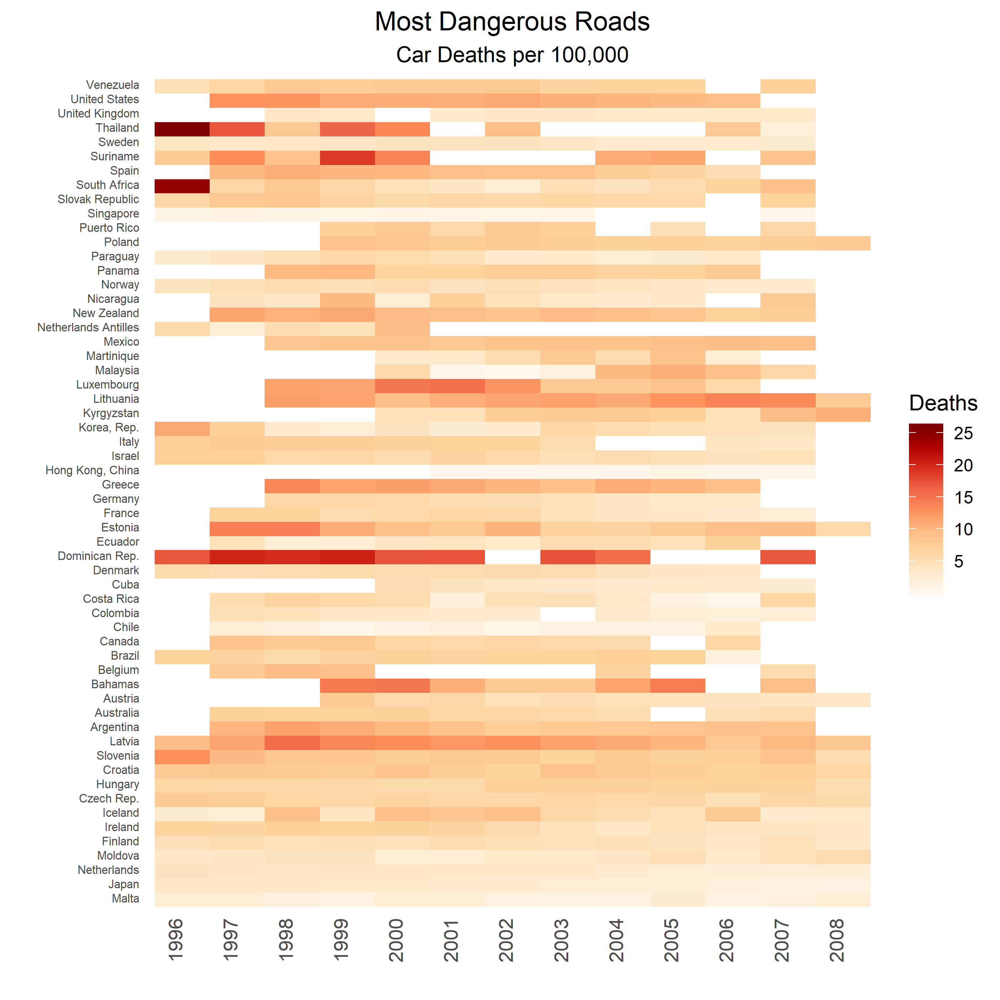

Tutorial: ggplot2 Heatmaps and Traffic Deaths in Thailand
How Dangerous is Driving in Thailand, really?
So in this tutorial we’ll be making a heatmap of the most dangerous countries to drive in, as measured by the number of traffic deaths per 100,000 residents. We’ll use ggplot2 to visualize our results.
It’s often said that driving in Thailand is dangerous. The lack of traffic law enforcement and the crazy driving by taxi and minivan drivers certainly is not helping to improve Thailand’s image as a country with dangerous roads. Let’s look at whether the data support this impression.
To investigate, we’ll use data from Gapminder (https://www.gapminder.org/) that are a collection of WHO and Euromonitor data. As mentioned above, they tracked road deaths per 100,000 residents from 1985-2008, but for many countries, data in some years are missing. In order to keep Thailand, I had to sacrifice by adding many missing values.
And by the way, I highly recommend the book “Factfulness” written by the people who created the Gapminder organization. Anywho.
Clean up and read in the data
You can see below that a lot of data are missing.
library(tidyverse)
library(RColorBrewer)
df <- readxl::read_xlsx('cars.xlsx')
colnames(df)[1] <- 'country'
head(glimpse(df))
## Observations: 148
## Variables: 25
## $ country <chr> "Albania", "Argentina", "Armenia", "Australia", "Aust...
## $ `1985.0` <dbl> NA, NA, NA, NA, NA, NA, NA, NA, NA, NA, NA, NA, NA, N...
## # A tibble: 6 x 25
## country `1985.0` `1986.0` `1987.0` `1988.0` `1989.0` `1990.0` `1991.0`
## <chr> <dbl> <dbl> <dbl> <dbl> <dbl> <dbl> <dbl>
## 1 Albania NA NA NA NA NA NA NA
## 2 Argentina NA NA NA NA NA NA NA
## 3 Armenia NA NA NA NA NA NA NA
## 4 Australia NA NA NA NA NA NA NA
## 5 Austria NA NA NA NA NA NA NA
## 6 Azerbaij~ NA NA NA NA NA NA NA
To figure out which countries are missing the most data, we can use the following command to count NAs for each row. This will come in handy later when we use this column to filter our results for our heatmap. If we liked, we could have also used a percent missing threshold. We’ll keep it simple for now.
df <- df%>%
mutate(na_count = rowSums(is.na(.)))
head(cbind(df$country, df$na_count))
## [,1] [,2]
## [1,] "Albania" "23"
## [2,] "Argentina" "13"
## [3,] "Armenia" "23"
## [4,] "Australia" "14"
## [5,] "Austria" "14"
## [6,] "Azerbaijan" "23"
Create custom color palette
Let’s use the colorRampPalette function to make twenty-five levels of ‘orange/red’ for our heatmap gradient. Why twenty-five? We can see from the glimpse() function that the highest value of deaths is around 25 per 100,000. Notice that normally we could only use the ‘OrRd’ palette with 9 colors, but colorRampPalette() lets us extend that to any number. It’s a very useful function if you do a lot of visualization.
my_pal <- colorRampPalette(brewer.pal(11, "OrRd"))(25)
## Warning in brewer.pal(11, "OrRd"): n too large, allowed maximum for palette OrRd is 9
## Returning the palette you asked for with that many colors
my_pal
## [1] "#FFF7EC" "#FEF2E0" "#FEEDD4" "#FEE8C8" "#FDE1BA" "#FDDAAC" "#FDD49E"
## [8] "#FDCB95" "#FDC38C" "#FDBB84" "#FCAB75" "#FC9C67" "#FC8D59" "#F77F53"
## [15] "#F3724D" "#EF6548" "#E7533A" "#DF412C" "#D7301F" "#CB2014" "#BF100A"
## [22] "#B30000" "#A10000" "#900000" "#7F0000"
Now we’re ready to plot our heatmap
One key feature is that we are basically subsetting countries that contain fewer than 18 NA values. Notice also that we set the scale_fill_gradientn’s color argument to our custom color gradient we created before. Also we set the na.value=’white’ so that the plot blends in with the white background.
And if you haven’t made a heatmap before, remember it works best if you convert your dataframe to long format by using the gather() function.
df%>%
filter(na_count < 18)%>%
select(1, 13:25)%>%
gather(-country, key='year', value='deaths')%>%
mutate(year = as.factor(as.integer(year)))%>%
ggplot(aes(reorder(country,deaths), year, fill=deaths))+
geom_tile()+
coord_flip()+
scale_fill_gradientn(colors = my_pal, na.value = 'white')+
theme(plot.subtitle = element_text(hjust = 0.5),
plot.caption = element_text(vjust = 1),
axis.ticks = element_line(linetype = "blank"),
panel.grid.major = element_line(colour = NA,
linetype = "blank"), panel.grid.minor = element_line(linetype = "blank"),
axis.text = element_text(vjust = 0.25),
axis.text.x = element_text(size = 10,
vjust = 0, angle = 90),
axis.text.y = element_text(size = 6),
panel.background = element_rect(fill = NA),
plot.title = element_text(hjust = 0.5))+
labs(x='', y='', title='Most Dangerous Roads', subtitle='Car Deaths per 100,000',
fill='Deaths')
.
Results: The Bad
So it does appear that Thailand is relatively dangerous for driving. In 1996, they had the highest death rate of all 58 countries listed here. It looks like driving became safer in the 2000s, but there is a lot of missing data, so it’s hard to be sure.
Interestingly, the Dominican Republic, Latvia, Estonia, Lithuania, Luxembourg, and Iceland (in certain years) do not fare well in terms of driver safety. The United States and New Zealand also don’t do very well. I’m guessing Iceland’s high death rates are due to bad weather in certain years. As far as Luxembourg is concerned, after some Googling I found out that it does indeed have one of the highest per capita traffic death rates in Europe. Are there lots of narrow, windy roads there? Bad drivers? Bad weather?
Results: The Good
On the positive side, Malta, Singapore, Moldova, Chile, Colombia, the UK, Sweden, and Ecuador seem particularly safe for drivers.